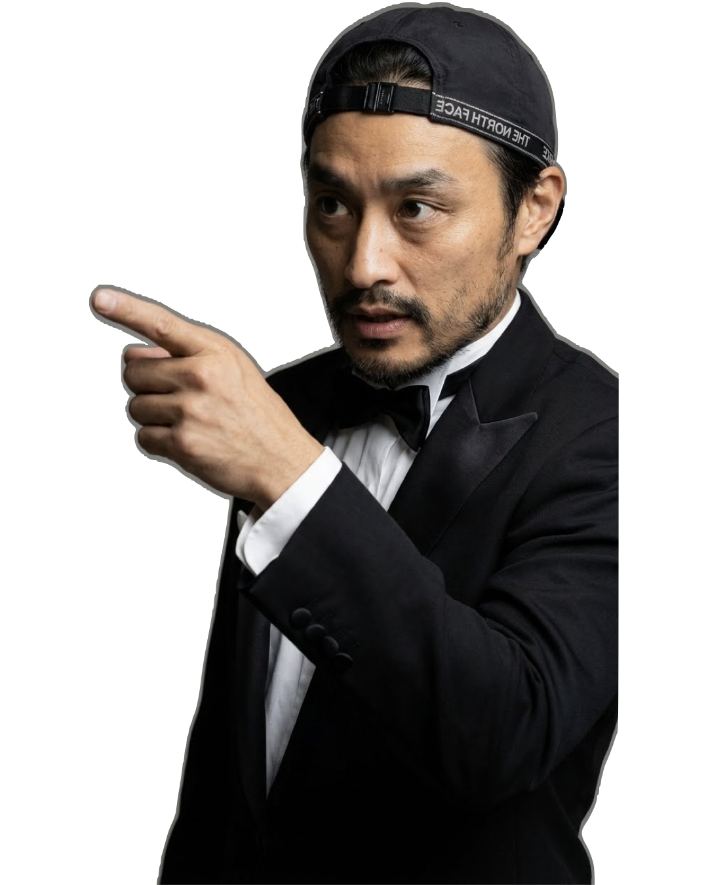

出演
舞台、ライブ、イベント、映像作品などのタップダンス出演。
CONTACT / BOOKING
出演・振付・出張指導などのご依頼はメールへ。概要のご相談は公式LINEでも受け付けています。
体験レッスン・通常レッスンの予約・レンタルは Rhythm Speaker公式サイトへ。

REQUEST TYPES
近いものをひとつ。未定でも大丈夫です。
舞台、ライブ、イベント、映像作品などのタップダンス出演。
CM、MV、舞台、映像、イベント等のタップダンス振付・演出相談。
外部施設・イベント等での体験、レッスン、ワークショップ。
学校・教育機関での授業、体験、表現活動、文化体験の相談。
リズム、身体、参加型体験を活用した企業・団体向けプログラムの相談。
メディア取材、共同企画、文化・教育・地域プロジェクト等の相談。
イベントや教室に適したタップダンス講師の紹介・手配。
ダンススタジオ運営に関する知見提供・相談。
音楽・リズム・タップダンスに関係する制作相談。
HELPFUL DETAILS
決まっていることだけでOK。
法人・団体の場合は組織名、個人の場合はお名前。
出演、振付、レッスン、講師の紹介・手配、スタジオ運営、音楽制作、学校教育、企業研修、取材・提携など。
本番日、実施希望月、会場・地域など。
観客、参加者、出演者、児童・生徒、社員など。
分かる範囲の予算感と、担当者・返信先情報。